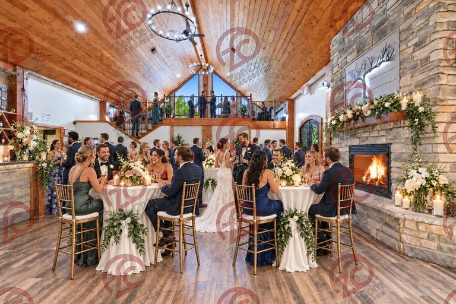
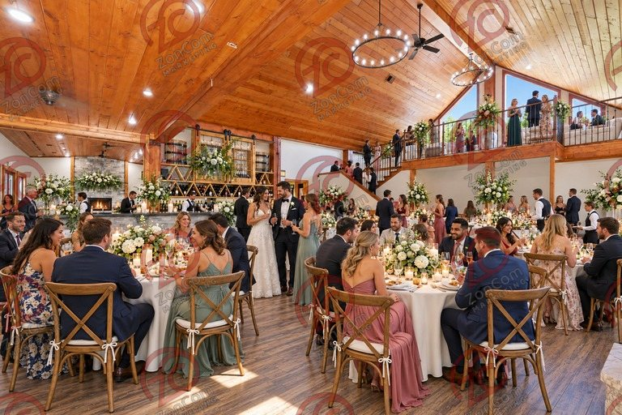
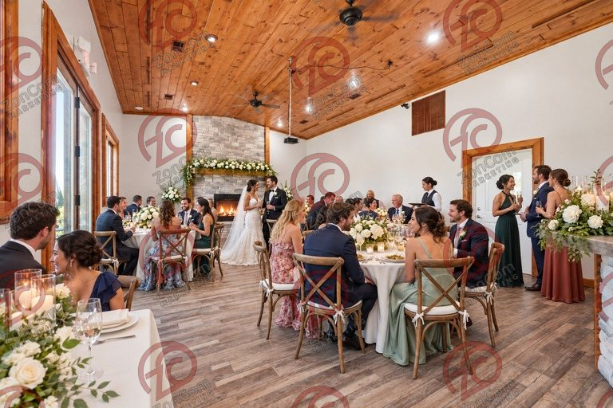
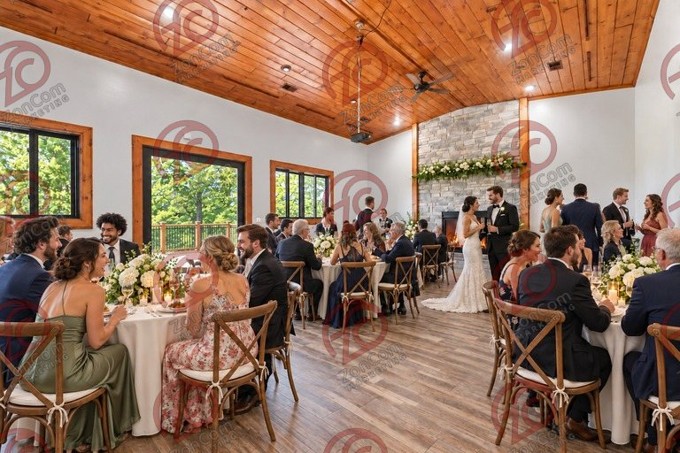
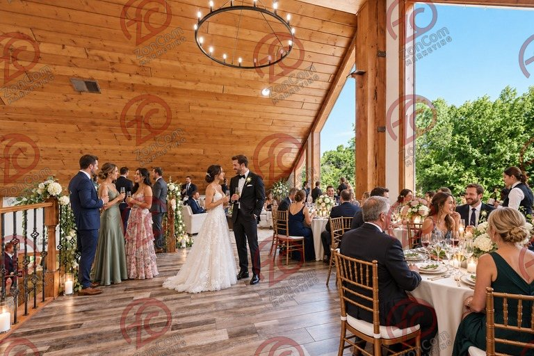
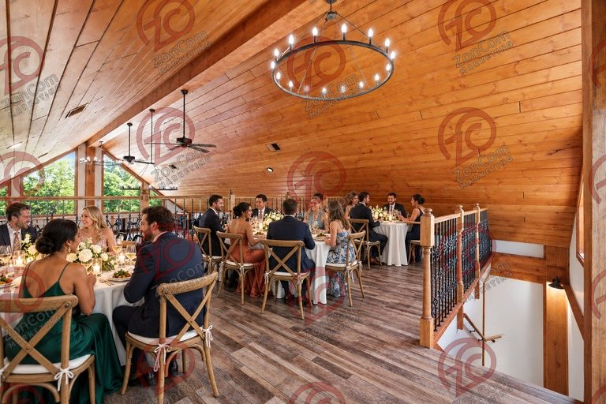
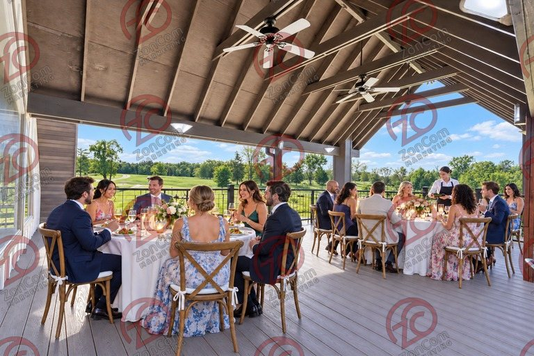
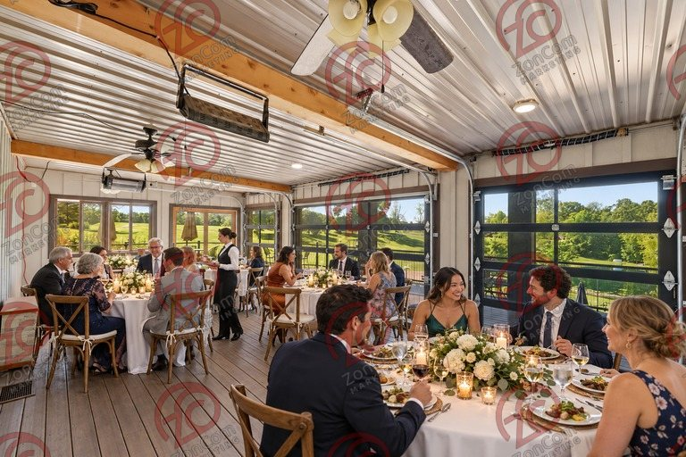
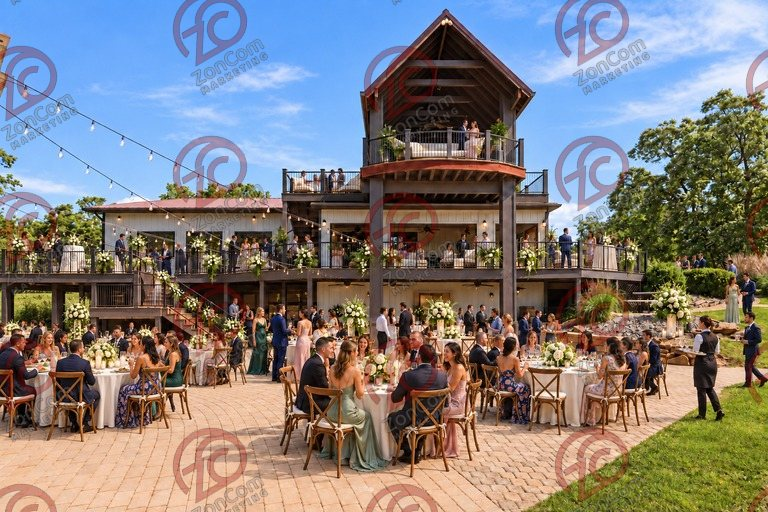
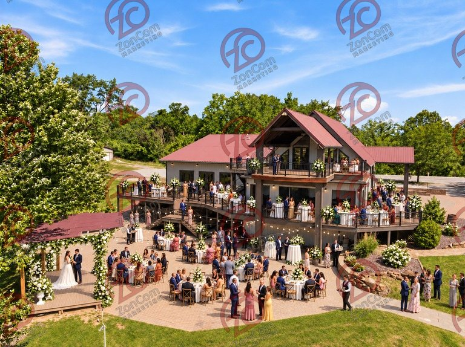

Concept 01 of 6
Events & weddings
A Southern Illinois destination setting for memorable indoor and outdoor events
A destination venue that combines an atmospheric indoor reception hall, food service, decks, outdoor gathering areas, a stage, pond views and flexible ceremony settings.

Conceptual rendering — digitally alteredConceptual rendering — digitally altered · View 01 · Great hall · Original photograph (digitally altered: fire added) 
Conceptual rendering — digitally alteredConceptual rendering — digitally altered · View 02 · Great hall · Original photograph 
Conceptual rendering — digitally alteredConceptual rendering — digitally altered · View 03 · Dining room · Original photograph (digitally altered: fire added) 
Conceptual rendering — digitally alteredConceptual rendering — digitally altered · View 04 · Dining room · Original photograph (digitally altered: fire added) 
Conceptual rendering — digitally alteredConceptual rendering — digitally altered · View 05 · Loft · Original photograph 
Conceptual rendering — digitally alteredConceptual rendering — digitally altered · View 06 · Loft · Original photograph 
Conceptual rendering — digitally alteredConceptual rendering — digitally altered · View 07 · Upper deck · Original photograph 
Conceptual rendering — digitally alteredConceptual rendering — digitally altered · View 08 · Enclosed porch · Original photograph 
Conceptual rendering — digitally alteredConceptual rendering — digitally altered · View 09 · Patio · Original photograph 
Conceptual rendering — digitally alteredConceptual rendering — digitally altered · View 10 · Aerial · Original photograph
Who it could suit
- Independent wedding and event venue operators
- Regional hospitality groups and restaurateurs
- Caterers or planners seeking an owned venue
- Owner operators expanding from a smaller venue
What the property brings
- Visually distinctive lodge interior with wood ceilings and stone fireplaces
- Commercial kitchen infrastructure visible in the listing photography
- Multiple indoor and outdoor gathering zones
- Existing amphitheater, decks, patios, pond, and landscaped grounds visible in the listing photography
A possible operating program
- Main hall staged for receptions, banquets, and private events
- Upper level used for smaller gatherings, vendor staging, or VIP functions
- Enclosed porch used as a weather-protected ceremony or cocktail space
- Outdoor stage, lawns, decks, and pond used as coordinated event settings
Improvement priorities
- Coordinated event furniture, lighting, decor inventory, and acoustic treatment
- Professional AV, Wi-Fi, power distribution, and event-management systems
- Dedicated preparation, storage, vendor-loading, and waste-handling procedures
- Parking, circulation, life-safety, restroom, occupancy, and accessibility review
Questions to explore
- What annual event volume and guest capacity support your model?
- Which functions must be indoors during poor weather?
- Do you require on-site lodging or can nearby lodging support the first phase?
- What capital budget is available for furniture, AV, life safety, and operations?
- Which licenses, catering arrangements, and alcohol policies would your model require?